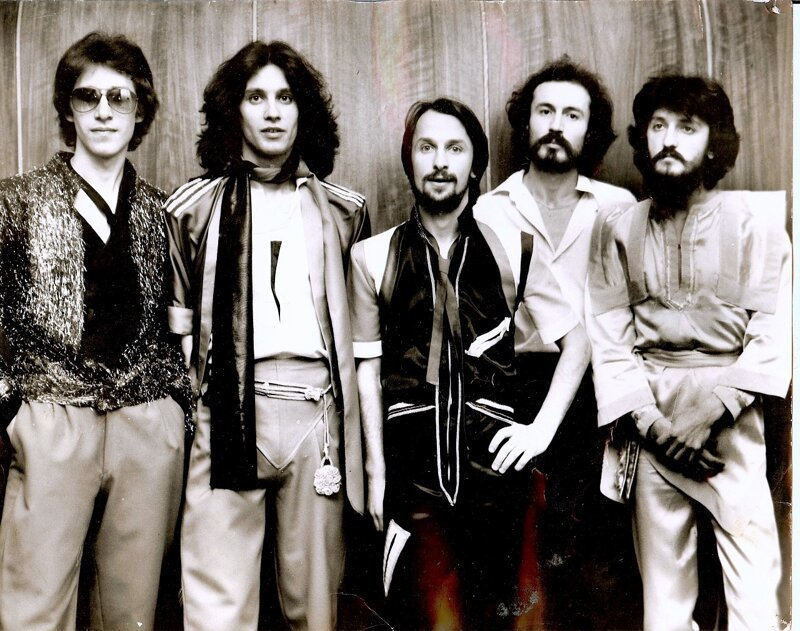

БИТЛОМАНИЯ
Аккуратные пиджаки и узкие брюки, короткие ботинки, белые рубашки, затем более свободные волосы и яркие шарфы. Образ тяготеет к западному бит-стилю, но адаптируется под советский гардероб: меньше роскоши, больше самодельных деталей.
В повседневной среде этот стиль выглядел более сдержанно: однотонные ткани, аккуратный крой, минимум украшений. Но на концертах появлялись контрастные галстуки, блестящие пуговицы и выразительная укладка, подчёркивавшая принадлежность к новой музыкальной волне.
На сцене и в студийных фото группы смешивали западный глэм и местные мотивы: длинные шарфы и узкие галстуки, лёгкий блеск ткани, очки в массивной оправе, иногда - рубашки с вышивкой или "сценическая" туника. Каждый участник мог выделяться деталью, но в кадре всё складывалось в единую картинку коллектива - как у зарубежных кумиров, только с советским бытом за кадром.
Зрители подхватывали отдельные элементы: отрастали волосы, появлялись джинсы и куртки, на плечах - сумки с кассетами и плакатами. Внешний вид становился способом узнать своих в толпе и заявить о вкусе без громких слов - настолько же важным, как сама музыка на вечере в ДК или клубе.